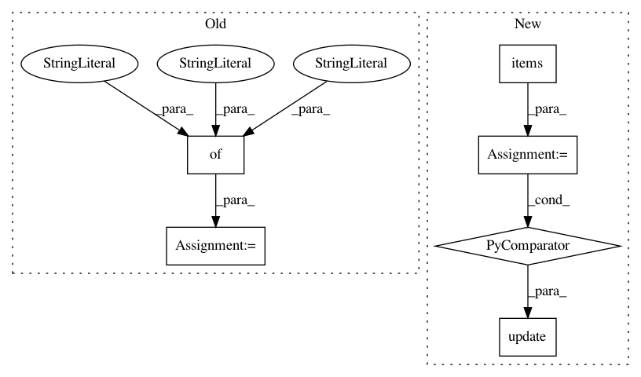

a41f2ff4c1437f0b61e76265c31bdec71be0556f,softlearning/algorithms/sac.py,SAC,get_diagnostics,#SAC#Any#Any#Any#Any#,358
Before Change
self.global_step),
feed_dict))
diagnostics = OrderedDict({
"Q-avg": np.mean(Q_values),
"Q-std": np.std(Q_values),
"Q_loss": np.mean(Q_losses),
"policy_loss": np.mean(policy_losses),
"alpha": alpha,
})
policy_diagnostics = self._policy.get_diagnostics(
batch["observations"])
diagnostics.update({
After Change
feed_dict = self._get_feed_dict(iteration, batch)
diagnostics = self._session.run(self._diagnostics_ops, feed_dict)
diagnostics.update(OrderedDict([
(f"policy/{key}", value)
for key, value in
self._policy.get_diagnostics(batch["observations"]).items()
]))
if self._plotter:
self._plotter.draw()
In pattern: SUPERPATTERN
Frequency: 3
Non-data size: 6
Instances
Project Name: rail-berkeley/softlearning
Commit Name: a41f2ff4c1437f0b61e76265c31bdec71be0556f
Time: 2019-04-26
Author: hartikainen@berkeley.edu
File Name: softlearning/algorithms/sac.py
Class Name: SAC
Method Name: get_diagnostics
Project Name: rail-berkeley/softlearning
Commit Name: 7c2c17d21c8b508cbf30cab8cede95ea64b5749e
Time: 2018-10-18
Author: hartikainen@berkeley.edu
File Name: softlearning/replay_pools/simple_replay_pool.py
Class Name: SimpleReplayPool
Method Name: __init__
Project Name: rail-berkeley/softlearning
Commit Name: a41f2ff4c1437f0b61e76265c31bdec71be0556f
Time: 2019-04-26
Author: hartikainen@berkeley.edu
File Name: softlearning/algorithms/sql.py
Class Name: SQL
Method Name: get_diagnostics